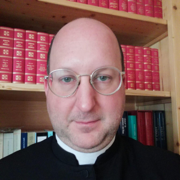

ORARI
Orario delle celebrazioni

| Domenica e festivi | Messa ore 9:00 |
Per aggiornamenti e orari delle altre celebrazioni in Diocesi, consulta il nostro canale:
Canale Telegram CFRVIl Coetus Fidelium San Remigio Vescovo custodisce e promuove la sacra liturgia secondo il rito romano antico.
Orari delle celebrazioniIl Coetus Fidelium San Remigio Vescovo riunisce fedeli veronesi legati alla tradizione liturgica romana. Da anni curiamo la celebrazione della Santa Messa secondo il Messale del 1962, offrendo un punto di riferimento stabile per chi desidera vivere la fede nella forma extraordinaria del rito romano.
| Domenica e festivi | Messa ore 9:00 |
Per aggiornamenti e orari delle altre celebrazioni in Diocesi, consulta il nostro canale:
Canale Telegram CFRV
Nato a Verona nel 1984, ordinato sacerdote il 15 maggio 2010 nella Cattedrale di Verona da Mons. Giuseppe Zenti.
Docente di Storia della Chiesa Medievale presso lo Studio Teologico diocesano nonché presso l’Istituto Superiore di Scienze Religiose “San Francesco” di Mantova.
Dal 2019 è incaricato stabile del vescovo per la celebrazione della S. Messa domenicale e festiva secondo il rito tridentino nella Diocesi di Verona.
Biografia completa